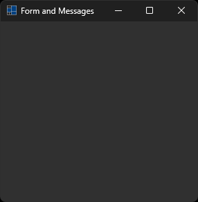

|
xtd
0.2.0
|
form_and_messages.cpp
demonstrates some events received by form.
- Windows


- macOS


- Gnome

#define TRACE
#include <xtd/forms/application>
#include <xtd/forms/trace_form>
#include <xtd/forms/form>
#include <xtd/ctrace>
using namespace std;
using namespace xtd;
using namespace xtd::forms;
public:
form1() {
text("Form and Messages");
}
protected:
void wnd_proc(message& message) override {
form::wnd_proc(message);
switch (message.msg()) {
case WM_ACTIVATE: ctrace << ustring::format("WM_ACTIVATE [activate={}]", as<bool>(message.lparam())) << endl; break;
case WM_ACTIVATEAPP: ctrace << ustring::format("WM_ACTIVATEAPP [activate={}, threat={}]", as<bool>(message.wparam()), message.lparam()) << endl; break;
case WM_COMMAND: ctrace << ustring::format("WM_COMMAND [type=0x{:X8}, control={}]", message.wparam(), message.lparam()) << endl; break;
case WM_CREATE: ctrace << ustring::format("WM_CREATE [CREATESTRUCT={}]", message.lparam()) << endl; break;
case WM_GETTEXT: ctrace << ustring::format("WM_GETTEXT [size={}, buffer={}]", message.wparam(), message.lparam()) << endl; break;
case WM_LBUTTONDBLCLK: ctrace << ustring::format("WM_LBUTTONDBLCLK [Buttons={}, x={}, y={}]", message.wparam(), LOWORD(message.lparam()), HIWORD(message.lparam())) << endl; break;
case WM_LBUTTONDOWN: ctrace << ustring::format("WM_LBUTTONDOWN [Buttons={}, x={}, y={}]", message.wparam(), LOWORD(message.lparam()), HIWORD(message.lparam())) << endl; break;
case WM_LBUTTONUP: ctrace << ustring::format("WM_LBUTTONUP [Buttons={}, x={}, y={}]", message.wparam(), LOWORD(message.lparam()), HIWORD(message.lparam())) << endl; break;
case WM_MBUTTONDBLCLK: ctrace << ustring::format("WM_MBUTTONDBLCLK [Buttons={}, x={}, y={}]", message.wparam(), LOWORD(message.lparam()), HIWORD(message.lparam())) << endl; break;
case WM_MBUTTONDOWN: ctrace << ustring::format("WM_MBUTTONDOWN [Buttons={}, x={}, y={}]", message.wparam(), LOWORD(message.lparam()), HIWORD(message.lparam())) << endl; break;
case WM_MBUTTONUP: ctrace << ustring::format("WM_MBUTTONUP [Buttons={}, x={}, y={}]", message.wparam(), LOWORD(message.lparam()), HIWORD(message.lparam())) << endl; break;
case WM_MOVE: ctrace << ustring::format("WM_MOVE [x={}, y={}]", LOWORD(message.lparam()), HIWORD(message.lparam())) << endl; break;
case WM_MOUSEHWHEEL: ctrace << ustring::format("WM_MOUSEHWHEEL [Buttons={}, delta={}, x={}, y={}]", LOWORD(message.wparam()), HIWORD(message.wparam()), LOWORD(message.lparam()), HIWORD(message.lparam())) << endl; break;
case WM_MOUSEMOVE: ctrace << ustring::format("WM_MOUSEMOVE [Buttons={}, x={}, y={}]", message.wparam(), LOWORD(message.lparam()), HIWORD(message.lparam())) << endl; break;
case WM_MOUSEWHEEL: ctrace << ustring::format("WM_MOUSEWHEEL [Buttons={}, delta={}, x={}, y={}]", LOWORD(message.wparam()), HIWORD(message.wparam()), LOWORD(message.lparam()), HIWORD(message.lparam())) << endl; break;
case WM_RBUTTONDBLCLK: ctrace << ustring::format("WM_RBUTTONDBLCLK [Buttons={}, x={}, y={}]", message.wparam(), LOWORD(message.lparam()), HIWORD(message.lparam())) << endl; break;
case WM_RBUTTONDOWN: ctrace << ustring::format("WM_RBUTTONDOWN [Buttons={}, x={}, y={}]", message.wparam(), LOWORD(message.lparam()), HIWORD(message.lparam())) << endl; break;
case WM_RBUTTONUP: ctrace << ustring::format("WM_RBUTTONUP [Buttons={}, x={}, y={}]", message.wparam(), LOWORD(message.lparam()), HIWORD(message.lparam())) << endl; break;
case WM_SETTEXT: ctrace << ustring::format("WM_SETTEXT [text=\"{}\"]", reinterpret_cast<char*>(message.lparam())) << endl; break;
case WM_SHOWWINDOW: ctrace << ustring::format("WM_SHOWWINDOW [show={}]", as<bool>(message.wparam())) << endl; break;
case WM_SIZE: ctrace << ustring::format("WM_SIZE [type={}, width={}, heignt={}]", message.wparam(), LOWORD(message.lparam()), HIWORD(message.lparam())) << endl; break;
case WM_XBUTTONDBLCLK: ctrace << ustring::format("WM_XBUTTONDBLCLK [Buttons={}, x={}, y={}]", message.wparam(), LOWORD(message.lparam()), HIWORD(message.lparam())) << endl; break;
case WM_XBUTTONDOWN: ctrace << ustring::format("WM_XBUTTONDOWN [Buttons={}, x={}, y={}]", message.wparam(), LOWORD(message.lparam()), HIWORD(message.lparam())) << endl; break;
case WM_XBUTTONUP: ctrace << ustring::format("WM_XBUTTONUP [Buttons={}, x={}, y={}]", message.wparam(), LOWORD(message.lparam()), HIWORD(message.lparam())) << endl; break;
case WM_APPIDLE: /*ctrace << "WM_APPIDLE" << endl;*/ break;
}
}
};
auto main()->int {
trace_form trace_form;
application::run(form1 {});
}
xtd::forms::style_sheets::control form
The form data allows you to specify the box of a form control.
Definition: form.h:21
@ text
The xtd::forms::status_bar_panel displays text in the standard font.
The xtd::forms namespace contains classes for creating Windows-based applications that take full adva...
Definition: about_box.h:13
The xtd namespace contains all fundamental classes to access Hardware, Os, System,...
Definition: system_report.h:17
Generated on Sun Oct 1 2023 07:46:00 for xtd by Gammasoft. All rights reserved.